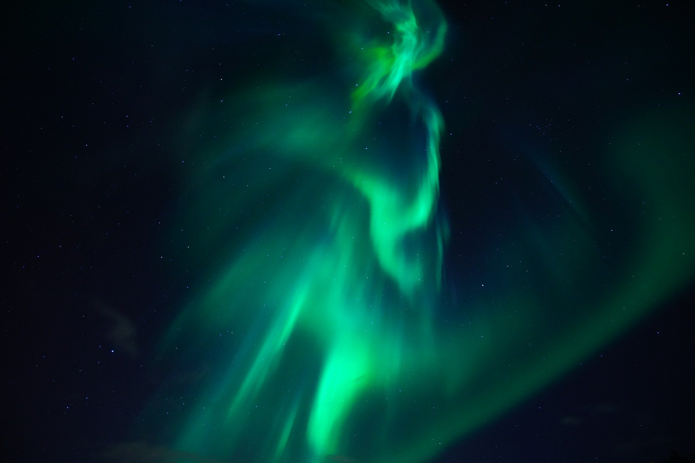

Steller Jay Sauna's is owned by Cass S who is a Cree Womxn from Northwestern Ontario now living in Whistler B.C. since 2014. Traditional name is Wawatay which translates to Northern Lights in the Anishinawbe language.
Her passion for Indigenous wellness and sustainable tourism ignited Stellar Jay Saunas. Her entrepreneurship honours her Grandmother who was a residential school survivor and her Mother who is a 60's scoop survivor - their legacy of resilience has allowed her to be where she is today.
Cass believes Indigenous sauna units represent more than just a service offered to guests - it is a showcase of Indigenous wellness and re-connection to the land, bringing the spirit back into sacred spaces, sustainably.
Miigwetch!
#reconciliation #decolonize #indigenize